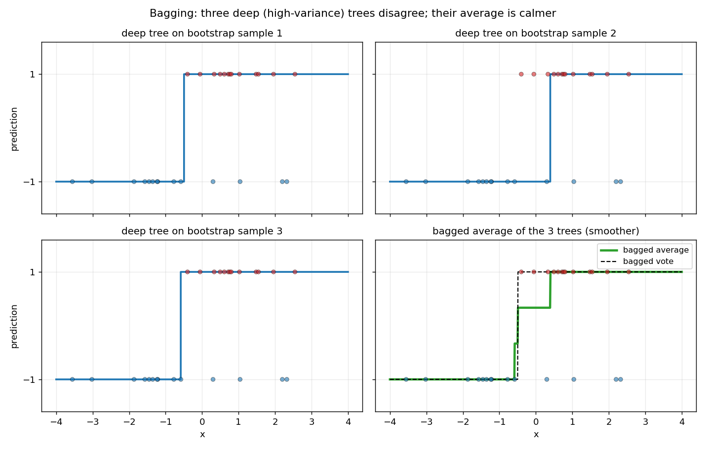
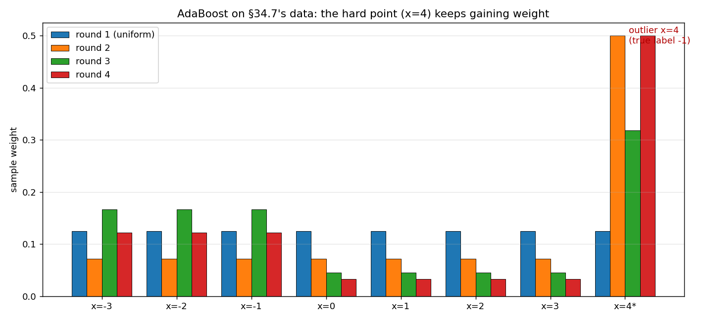

Chapter 34: Ensembles — bagging, boosting, AdaBoost
Everything in §§34.2–34.4 comes from the MLT Week-11 materials (revision slides and practice assignment), ISL §8.2.1, ESL §8.7, and the MITx 6.036 notes ch. 14. §§34.5–34.6 follow the MLT Week-11 revision slides and practice assignment (Q5’s AdaBoost weight update), with the weighted-majority-vote form from ESL ch. 14; §34.8’s contrast and the boosting tuning parameters from ISL §8.2.3. The worked example in §34.7 and the figures use the chapter’s own tiny datasets, with every number recomputed independently (review log).
Notation. The §22.9 convention: instances \(x^{(i)}\), labels \(\boxed{y^{(i)} \in \{+1, -1\}}\). \(D = \{(x^{(i)}, y^{(i)})\}_{i=1}^n\) is the training set. Weak classifiers are written \(G_m(x) \in \{+1, -1\}\) (ESL’s notation), and the sample weights in AdaBoost round \(m\) are \(D_m(i)\), following the MLT practice assignment’s notation.
34.1 The ensemble idea — the answer to trees’ variance problem
§29.21(ii) left a loose end: decision trees have high variance — small changes in the data reshuffle the splits, so the fitted tree swings with the sample. §29.22 promised that ensembles attack exactly this weakness. Here is how.
Def (ensemble method). An approach that combines many simple “building block” models to obtain a single, potentially very powerful model (ISL §8.2). The building blocks are sometimes called weak learners — models that give mediocre predictions on their own.
- Why combining helps: variance. §28.9’s picture: high variance = the fit is over-sensitive to this particular training sample. Now recall §21.5’s miracle fact: for \(n\) independent copies, \(\mathrm{Var}(\bar{X}_n) = \sigma^2/n\) — averaging shrinks variance. An ensemble exploits exactly this: train many jittery models on many slightly different datasets, average (or vote) their predictions, and the jitters cancel while the signal survives.
- The weak-learner bargain. Each block is cheap and weak — a shallow tree, a stump — but the combination is strong. ISL’s framing: the blocks are mediocre alone; the ensemble is the product.
- Two ways to combine (the chapter’s two halves): bagging (§§34.2–34.4) builds the blocks independently, in parallel, and averages them; boosting (§§34.5–34.6) builds them sequentially, each one fixing the previous one’s mistakes.
Basically, … “One jittery expert guesses; ask a hundred jittery experts trained on slightly different data and average their answers — the jitters cancel out. Bagging asks them all at once; boosting asks them one after another, each new expert told where the last one went wrong.”
34.2 Bagging: bootstrap aggregation
Def (bootstrap sample). A dataset of size \(n\) drawn with replacement from the \(n\) training points — some points appear twice, some never (ISL §8.2.1; MITx 6.036: \(B\) such datasets, each of size \(n\)).
The bagging algorithm (ISL §8.2.1; ESL §8.7):
- For \(b = 1, \ldots, B\): draw a bootstrap sample \(Z^\ast_b\) and train one model \(\hat f^\ast_b\) on it.
- Regression: average them — \(\boxed{\hat f_{\mathrm{bag}}(x) = \tfrac{1}{B}\sum_{b=1}^{B} \hat f^\ast_b(x)}\).
- Classification: majority vote — the class predicted by the most of the \(B\) models (equivalently: average the one-hot vote vectors and take the \(\arg\max\); MITx 6.036, ESL §8.7).
Why the variance drops. ISL’s argument is the §21.5 one: averaging a set of observations divides the variance (\(\sigma^2/n\)). Each \(\hat f^\ast_b\) is trained on a different resample, so averaging them smooths out the sample-to-sample swings. ESL makes it precise for squared-error loss: averaging reduces variance and leaves bias unchanged — and the “ideal” aggregation (resampling from the true population) never increases mean squared error. In ESL’s tree experiment, predictors with high correlation made single trees twitchy; bagging “succeeds in smoothing out this variance and hence reducing the test error.”
- Deep, unpruned trees are the ideal base learner (ISL): each one has high variance but low bias — exactly the profile averaging fixes. (Contrast §29.18–29.19: a single tree needs pruning; a bagged forest of unpruned trees does not.)
- \(B\) is not a critical knob (ISL): a very large \(B\) does not lead to overfitting — use \(B\) big enough that the error settles down (ISL’s example: \(B = 100\) suffices).
eg 1 (the vote beats each voter). Three independent classifiers, each with error rate \(e = 0.3\). The majority is wrong only if \(\ge 2\) of 3 are wrong: \[P(\text{vote wrong}) = \tbinom{3}{2}(0.3)^2(0.7) + (0.3)^3 = 3(0.09)(0.7) + 0.027 = 0.189 + 0.027 = \boxed{0.216 < 0.3}.\] Each voter errs \(30\%\) of the time; the vote errs \(21.6\%\). (This is ESL’s consensus-vote argument: with independent weak learners each beating \(0.5\), the majority’s win probability \(\to 1\) as \(B\) grows — the “wisdom of crowds.”)

Basically, … “Bagging = train the same learner \(B\) times on \(B\) shuffled-with-replacement copies of your data, then average the answers (or take a vote). Each copy is a slightly different ‘parallel universe’ of your dataset; the average across universes doesn’t twitch when one universe’s noise changes — that’s the variance dying.”
34.3 Bagging needs disagreement — the diversity condition
The MLT Week-11 practice assignment asks exactly when bagging fails (Q3): bagging reduces variance (not bias), and it is inefficient if the classifiers are fully correlated — fully correlated classifiers have the same average output, so aggregating them changes nothing.
- The independence caveat (ESL): the “wisdom of crowds” math assumes the voters are independent — but bagged trees are not; they all see resamples of the same data. The less correlated the trees, the closer the real gain is to the ideal gain.
- Random forests: bagging + decorrelation (MLT revision slides; practice Q1). A random forest repeats bagging’s recipe with one twist: each tree is grown on a bootstrap sample but at every split only a random subset of features is considered. The revision slides’ steps: 1) create the bootstrapped dataset; 2) grow the tree on it using a random subset of features at each split; 3) repeat — hundreds of trees.
- The \(m\)-knob trade-off (practice Q1’s answer): decreasing the number of features considered per split reduces the correlation between trees (a “wide variety of trees” — revision slides), while increasing it improves each individual tree (more features to choose the split from). The revision slides’ practical rule: start with \(\sqrt{d}\) features and try different values.
Note: the sources cover random forests only this far — a decorrelated-bagging variant. The chapter’s topic stays bagging and boosting; forests appear only where the MLT assignment puts them.
Basically, … “Averaging only helps if the things you average actually disagree. Ten copies of the same tree vote identically — no gain. Random forests force disagreement on purpose: each tree is only allowed to look at a random handful of features at each split, so the trees come out different and the average has something to smooth.”
34.4 Out-of-bag error: a free test-error estimate
Bagging hands you a validation set for free (ISL §8.2.1):
- Each tree sees only ~2/3 of the data. A bootstrap sample leaves about one-third of the observations unused — these are the out-of-bag (OOB) observations for that tree.
- OOB prediction for point \(i\): predict it using only the trees for which it was OOB (about \(B/3\) of them), then average (regression) or vote (classification).
- OOB error \(\approx\) test error: since each point is predicted only by trees that never saw it, the OOB error is a valid estimate of the test error — with \(B\) large it is virtually equivalent to leave-one-out cross-validation. Handy when real cross-validation would be computationally onerous.
eg 2 (OOB counting). \(n = 100\) points, \(B = 300\) trees. A given point lands in a given bootstrap sample with probability \(1 - (1 - 1/100)^{100} \approx 1 - 1/e \approx 0.632\) — so each tree trains on \(\approx 63\) of the \(100\) points (“around two-thirds,” ISL) and point \(i\) is OOB in \(\approx 300 \times 0.368 \approx \boxed{110}\) trees, each contributing one vote to its OOB prediction.
Basically, … “Every bootstrap sample accidentally leaves out a third of your data. Those left-out points are a built-in test set for that tree — predict each point using only trees that never trained on it, and you get an honest test-error estimate without holding out anything.”
34.5 Boosting: the sequential idea — fix mistakes, don’t average them away
The MLT revision slides state the whole philosophy in two lines: first build a model on the training data; then build a second model to rectify the errors of the first. ISL §8.2.3 sharpens the contrast with bagging:
- Sequential, not parallel. Boosting grows trees one after another, each tree using information from the previously grown trees. There is no bootstrap sampling — each tree is fit on a modified version of the original dataset.
- Learn slowly. ISL’s regression version: fit a small tree to the current residuals, add a shrunken copy of it to the model (\(\hat f \leftarrow \hat f + \lambda\hat f_b\)), update the residuals, repeat. The shrinkage \(\lambda\) (typically \(0.01\) or \(0.001\)) slows learning further — and “statistical learning approaches that learn slowly tend to perform well.”
- Small trees suffice. Because each tree sees what the earlier ones missed, deep trees are unnecessary — stumps (\(d = 1\) split) often work, and a stump ensemble is an additive model (interpretable, unlike bagging’s forest).
Def (weak learner). A classifier only slightly better than a random model (revision slides) — error rate just below \(0.5\) (ESL). Def (stump). A decision tree with a single split (revision slides).
Basically, … “Bagging asks a hundred experts independently and averages. Boosting hires one weak expert, looks at exactly which questions it got wrong, hires the next expert specifically to fix those, and so on — learning slowly, mistake by mistake. No resampling lottery; the dataset itself is reweighted so the hard questions shout louder each round.”
34.6 AdaBoost: adaptive boosting, the algorithm
Setup: binary labels \(y^{(i)} \in \{+1, -1\}\) (§22.9). The base learners \(G_m(x) \in \{+1, -1\}\) are usually stumps. The course’s version (revision slides + practice-assignment Q5 solution):
The AdaBoost algorithm.
- Initialize. \(\boxed{D_0(i) = 1/n}\) — equal importance to every sample for the first stump.
- For \(m = 1, \ldots, M\): fit the weak classifier \(G_m\) to the data weighted by \(D_{m-1}\); compute its weighted error \(\boxed{e_m = \sum_i D_{m-1}(i)\,\mathbf{1}(G_m(x^{(i)}) \ne y^{(i)})}\) (the revision slides: “error = proportion of incorrectly classified samples”).
- Score the classifier (“performance” in the slides): \(\boxed{\alpha_m = \tfrac{1}{2}\ln\!\left(\frac{1 - e_m}{e_m}\right)}\). A stump with \(e_m\) near \(0\) earns a huge \(\alpha_m\); one barely better than guessing (\(e_m \to 0.5\)) earns \(\alpha_m \to 0\).
- Reweight the samples — increase the misclassified, decrease the correct (practice Q5’s solution): \[\boxed{w(i) = D_{m-1}(i)\,e^{+\alpha_m}\ \text{if } G_m(x^{(i)}) \ne y^{(i)},\qquad w(i) = D_{m-1}(i)\,e^{-\alpha_m}\ \text{if } G_m(x^{(i)}) = y^{(i)}},\] then \(\boxed{D_m(i) = w(i)/\sum_j w(j)}\) (normalize to sum \(1\)).
- Output the weighted majority vote (ESL 14.1): \(\boxed{G(x) = \operatorname{sign}\!\left(\sum_{m=1}^{M} \alpha_m G_m(x)\right)}\) — more accurate classifiers get higher influence.
Why it works (ESL): observations misclassified by \(G_m\) get their weights increased, correctly classified ones get them decreased — so “as iterations proceed, observations that are difficult to classify receive ever-increasing influence,” and each new classifier is forced to concentrate on the points the previous ones missed.
Note (the \(\tfrac12\)). ESL’s AdaBoost.M1 box writes \(\alpha_m = \log((1-e_m)/e_m)\) without the \(\tfrac12\); the MLT course’s revision slides and practice-assignment solution both use \(\alpha_m = \tfrac12\ln((1-e_m)/e_m)\). This chapter follows the course’s form throughout (the \(\tfrac12\) only rescales all \(\alpha_m\) equally, so the vote’s sign is unaffected).
Basically, … “Give every point an equal vote and build a stump. The stump misses some points — so shout the misses’ names louder (multiply their weights by \(e^{+\alpha}\)) and whisper the hits (multiply by \(e^{-\alpha}\)), then build the next stump listening to the shouting. At the end every stump votes, but accurate stumps get more votes (\(\alpha_m\)). The points nobody can classify end up screaming — which is exactly what §34.7 watches happen.”
34.7 Hand-worked: three AdaBoost rounds on eight points
The chapter’s own dataset (labels \(\pm 1\), one planted outlier at \(x = 4\)):
| \(x^{(i)}\) | \(-3\) | \(-2\) | \(-1\) | \(0\) | \(1\) | \(2\) | \(3\) | \(4\) |
|---|---|---|---|---|---|---|---|---|
| \(y^{(i)}\) | \(-1\) | \(-1\) | \(-1\) | \(+1\) | \(+1\) | \(+1\) | \(+1\) | \(-1\) |
Round 1. \(D_0(i) = 1/8\). The best stump is \(G_1(x) = -1\) if \(x \le -0.5\), \(+1\) otherwise — it misses only \(x = 4\). So \(e_1 = 1/8\) and \[\alpha_1 = \tfrac12\ln\!\left(\frac{1 - 1/8}{1/8}\right) = \tfrac12\ln 7 \approx \boxed{0.9730}.\] Update: \(x = 4\) gets \(\tfrac18 e^{+\alpha_1} = \tfrac18\sqrt{7}\); the other seven get \(\tfrac18 e^{-\alpha_1} = \tfrac18/\sqrt{7}\). Normalizer \(Z = \tfrac18\sqrt{7} + 7\cdot\tfrac18/\sqrt{7} = \tfrac{2\sqrt{7}}{8} = \tfrac{\sqrt{7}}{4}\). Hence \[\boxed{D_1(4) = \frac{\sqrt{7}/8}{\sqrt{7}/4} = \frac12,\qquad D_1(i) = \frac{1/(8\sqrt{7})}{\sqrt{7}/4} = \frac1{14}\ (i \ne 4)}.\] Check: \(\tfrac12 + 7\cdot\tfrac1{14} = 1\). The outlier now holds half the total weight.
Round 2. Weights: \(1/14\) on the first seven points, \(1/2\) on \(x = 4\). Reusing \(G_1\) would err \(1/2\) (it misses only the now-heavy \(x = 4\)). The winner is the flipped stump \(G_2(x) = +1\) if \(x \le 3.5\), \(-1\) otherwise — it misses \(-3, -2, -1\): \(e_2 = 3/14 \approx 0.2143\), \[\alpha_2 = \tfrac12\ln\!\left(\frac{11/14}{3/14}\right) = \tfrac12\ln\!\left(\tfrac{11}{3}\right) \approx \boxed{0.6496}.\] With \(s = e^{\alpha_2} = \sqrt{11/3}\): the three missed points get \(\tfrac1{14}s\), the five correct get \(\tfrac1{14}/s\) (four of them) and \(\tfrac12/s\) (\(x = 4\)). Normalizer \(Z = \tfrac{3}{14}s + \tfrac{11}{14}/s = \tfrac{11}{7}/s\) (using \(s^2 = 11/3\)), giving \[\boxed{D_2(-3\!:\!-1) = \frac16\ \text{each},\quad D_2(0\!:\!3) = \frac1{22}\ \text{each},\quad D_2(4) = \frac7{22}}.\] Check: \(3\cdot\tfrac16 + 4\cdot\tfrac1{22} + \tfrac7{22} = \tfrac12 + \tfrac{11}{22} = 1\).
Round 3. The best stump is \(G_3 = G_1\) again (\(-1\) left of \(-0.5\), \(+1\) right) — it misses only \(x = 4\): \(e_3 = 7/22 \approx 0.3182\), \[\alpha_3 = \tfrac12\ln\!\left(\frac{15/22}{7/22}\right) = \tfrac12\ln\!\left(\tfrac{15}{7}\right) \approx \boxed{0.3811}.\] With \(s = \sqrt{15/7}\): \(Z = \tfrac{7}{22}s + \tfrac{15}{22}/s = \tfrac{15}{11}/s\) (using \(s^2 = 15/7\)), giving \[\boxed{D_3(-3\!:\!-1) = \frac{11}{90}\ \text{each},\quad D_3(0\!:\!3) = \frac1{30}\ \text{each},\quad D_3(4) = \frac12}.\] Check: \(3\cdot\tfrac{11}{90} + 4\cdot\tfrac1{30} + \tfrac12 = \tfrac{33+12+45}{90} = 1\). The outlier is back at weight \(1/2\) — half of all attention on one point.

The ensemble after 3 rounds. \(G(x) = \operatorname{sign}(\alpha_1 G_1 + \alpha_2 G_2 + \alpha_3 G_3)\): - \(x \le -0.5\): \(-(\alpha_1+\alpha_3) + \alpha_2 = -0.7044 \Rightarrow \boxed{-1}\) (correct for \(-3,-2,-1\)). - \(-0.5 < x \le 3.5\): \(\alpha_1+\alpha_2+\alpha_3 = 2.0037 \Rightarrow \boxed{+1}\) (correct for \(0,1,2,3\)). - \(x > 3.5\): \((\alpha_1+\alpha_3) - \alpha_2 = 0.7044 \Rightarrow \boxed{+1}\) — still wrong on \(x = 4\) (true \(-1\)).
The §33.10 connection, fulfilled. The soft-margin SVM tolerates the hard point via slack (§33.3: it pays \(\xi_i\) and the boundary moves on). AdaBoost does the opposite: it reweights the hard point — here to weight \(1/2\) — and tries again, round after round. Same enemy (the unclassifiable outlier), opposite tactic: tolerance vs. obsession.
Basically, … “Watch the weights: the stump keeps missing \(x = 4\), so its weight balloons to half of everything while the easy points fade to crumbs. The final vote is three stumps arguing — and the loudest argument is still about the one point nobody can classify. That’s AdaBoost’s whole personality: it cannot let a mistake go.”
34.8 Bagging vs boosting — the sources’ contrast
- Parallel vs sequential (ISL §8.2.3). Bagging: each tree is built on a bootstrap dataset independent of the other trees; boosting: the trees are grown sequentially, each using information from the previously grown ones — and boosting involves no bootstrap sampling.
- What each fixes. Bagging reduces variance by averaging independent-ish fits (good for high-variance, low-bias deep trees, §34.2). Boosting rectifies errors: each round concentrates on the previous round’s mistakes (reweighting) or residuals, learning slowly (revision slides; ISL).
- More trees. Bagging: large \(B\) does not overfit (ISL). Boosting: can overfit if \(B\) is too large — choose \(B\) by cross-validation (ISL).
- Base learners. Bagging wants strong-but-twitchy learners (deep unpruned trees, ISL). Boosting wants weak learners — stumps are often enough, and usually better (revision slides; ISL).
Basically, … “Bagging = democracy: everybody votes independently at the same time, majority wins, and adding more voters never hurts. Boosting = tutoring: one weak student at a time, each drilled specifically on the last one’s mistakes — powerful, but drill too long (\(B\) too big) and it starts memorizing.”
34.9 Strengths and limits — as the sources list them
Bagging. - Strengths: dramatically reduces the variance of unstable procedures like trees, improving prediction (ESL’s simulated example; ISL: “impressive improvements” from hundreds of trees); simple to run; \(B\) is not a delicate knob; OOB error comes free (§34.4). - Limits: any interpretability of a single tree is lost (ESL; MITx 6.036); stable procedures like nearest neighbours are barely affected (ESL) — nothing to smooth; under 0–1 loss, bagging a bad classifier can make it worse (ESL); and it needs diverse learners — fully correlated classifiers gain nothing (MLT practice Q3).
Boosting / AdaBoost. - Strengths: can dramatically improve even a very weak classifier — ESL’s stump experiment: \(45.8\%\) test error (near guessing) \(\to\) \(\boxed{5.8\%}\) after \(400\) rounds, beating a \(244\)-node tree (\(24.7\%\)); slow learning tends to perform well (ISL); small trees suffice since each sees the earlier ones (ISL). - Limits: unlike bagging, boosting can overfit if \(B\) is too large — tune \(B\) by cross-validation (ISL); it carries three tuning parameters (\(B\), shrinkage \(\lambda\), interaction depth \(d\) — ISL’s Algorithm 8.2), so more tuning effort than bagging’s “just crank \(B\).”
Basically, … “Bagging’s deal: kills variance, costs you the pretty tree picture, useless on already-stable methods. Boosting’s deal: turns stumps into champions by obsessing over mistakes, but the obsession needs supervision — too many rounds and it overfits, and there are three knobs to tune instead of one.”
34.10 Where this goes next
- The variance story closes. §29.21(ii)’s “mitigated by ensembles” is now concrete: trees twitch (§29.21(ii)), averaging calms them (§34.2), and decorrelated averaging calms them more (§34.3).
- Same enemy, opposite tactic (§33.10, fulfilled in §34.7): the soft margin tolerates hard points with slack; AdaBoost reweights them and tries again.
- Chapter 35 (loss functions). ESL’s deeper AdaBoost theory shows it fits an additive model optimizing the exponential loss — the “why do the weights update this way” story belongs with the loss functions, next chapter.
Problem set
- Vote arithmetic. Five independent classifiers, each with error rate \(0.2\). (i) Write the majority-vote error as a binomial sum and compute it. (ii) Is it below \(0.2\)? (iii) In one line, which assumption of this calculation fails for real bagged trees (§34.3)?
- OOB counting. \(n = 150\) points, \(B = 600\) trees. (i) Estimate the expected number of trees for which a fixed point is OOB. (ii) Estimate how many of the \(150\) points a given tree trains on. (iii) In one line, why is the OOB error a valid test-error estimate?
- AdaBoost by hand (Q5-style). \(100\) points, first stump misclassifies \(30\). Using the §34.6 update with \(\alpha = \tfrac12\ln((1-e)/e)\): (i) compute \(\alpha\); (ii) give the unnormalized weight of a misclassified and of a correctly classified point; (iii) normalize and give the final weight of a misclassified point (leave as an exact expression, then a decimal).
- Reading \(\alpha\). (i) Show \(\alpha_m > 0 \iff e_m < 0.5\). (ii) What is \(\alpha_m\) when \(e_m = 0.5\), and what does that mean for \(G_m\)’s role in the final vote? (iii) In one line, why must a weak learner beat random guessing for AdaBoost to work?
- Bagging vs boosting, sourced. For each claim say whether the sources support it and cite the section: (i) “Boosting builds trees on bootstrap samples.” (ii) “A very large \(B\) never causes overfitting in boosting.” (iii) “Bagging reduces variance but leaves bias unchanged (squared-error).” (iv) “In boosting, each tree is fit independently of the others.”
- The \(m\)-knob. From the MLT practice assignment (Q1): (i) decreasing the number of features considered per split does what to tree-to-tree correlation? (ii) Increasing it does what to individual tree strength? (iii) In one line, why does (i) help bagging (§34.3)?
Solutions
Attempt each problem first, then click a problem to reveal its worked solution.
Five independent classifiers, each with error rate \(e = 0.2\). Let \(S\) = number wrong; \(S \sim \mathrm{Bin}(5, 0.2)\).
(i) The majority is wrong iff \(S \ge 3\): \[P(\text{vote wrong}) = \sum_{k=3}^{5}\tbinom{5}{k}(0.2)^k(0.8)^{5-k}\] \[= \tbinom{5}{3}(0.2)^3(0.8)^2 + \tbinom{5}{4}(0.2)^4(0.8) + (0.2)^5\] \[= 10(0.008)(0.64) + 5(0.0016)(0.8) + 0.00032 = 0.0512 + 0.0064 + 0.00032 = \boxed{0.05792}.\]
(ii) Yes: \(0.05792 < 0.2\) — the vote is far better than each voter (same moral as §34.2’s eg 1).
(iii) Independence fails for real bagged trees: they train on resamples of the same data, so they are correlated, and the true gain is smaller than the binomial ideal (§34.3).
(i) Each point is OOB for about one-third of the trees: \(\approx B/3 = \boxed{200}\) trees.
(ii) Each tree trains on about \(n(1 - 1/e) \approx 150 \times 0.632 \approx \boxed{95}\) distinct points (“around two-thirds,” §34.4).
(iii) Point \(i\)’s OOB prediction uses only trees that never trained on it — so the OOB error measures performance on genuinely unseen data, like a test set.
\(e = 30/100 = 0.3\). With \(s = e^{\alpha} = \sqrt{(1-e)/e} = \sqrt{7/3}\):
(i) \(\boxed{\alpha = \tfrac12\ln(7/3) \approx 0.4236}\).
(ii) Unnormalized: misclassified \(\frac{1}{100}s = \frac{\sqrt{7/3}}{100} \approx \boxed{0.015275}\); correctly classified \(\frac{1}{100}/s = \frac{\sqrt{3/7}}{100} \approx \boxed{0.0065465}\).
(iii) Normalizer \(Z = \frac{30s + 70/s}{100}\). Final misclassified weight: \[\frac{s}{30s + 70/s} = \frac{s^2}{30s^2 + 70} = \frac{7/3}{30\cdot 7/3 + 70} = \frac{7/3}{140} = \boxed{\frac{1}{60} \approx 0.016667}.\] (This is the MLT practice assignment Q5’s answer (c), recomputed: \(\sqrt{7/3}\,/\,(30\sqrt{7/3} + 70\sqrt{3/7}) = 1/60\).)
(i) \(\alpha_m = \tfrac12\ln\!\left(\frac{1-e_m}{e_m}\right) > 0 \iff \frac{1-e_m}{e_m} > 1 \iff 1 - e_m > e_m \iff \boxed{e_m < 0.5}\).
(ii) \(e_m = 0.5 \Rightarrow \boxed{\alpha_m = 0}\): the classifier contributes nothing to the weighted vote — a coin-flip stump is ignored.
(iii) If \(e_m \ge 0.5\) then \(\alpha_m \le 0\) — the round adds no positive signal (or votes against itself), so reweighting cannot steer the ensemble toward the hard points.
(i) False. Boosting does not use bootstrap sampling; each tree is fit on a modified (reweighted) version of the original data (ISL §8.2.3; §34.5(i), §34.8(i)).
(ii) False. Unlike bagging, boosting can overfit if \(B\) is too large — \(B\) is chosen by cross-validation (ISL §8.2.3; §34.8(iii)).
(iii) True. Under squared-error loss, averaging reduces variance and leaves bias unchanged (ESL §8.7; §34.2).
(iv) False. Boosting trees are grown sequentially, each using information from the previously grown trees (ISL §8.2.3; §34.8(i)).
(i) Decreasing the features per split reduces the tree-to-tree correlation (wider variety of trees).
(ii) Increasing the features per split increases each individual tree’s strength (more features to pick the split from).
(iii) Decorrelated trees are what make averaging actually reduce variance — fully correlated trees vote identically and bagging gains nothing (§34.3).